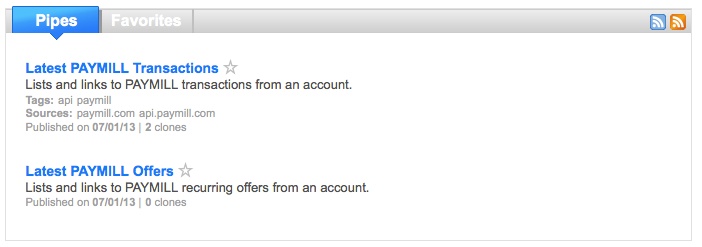
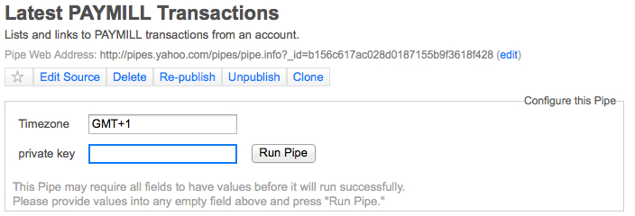
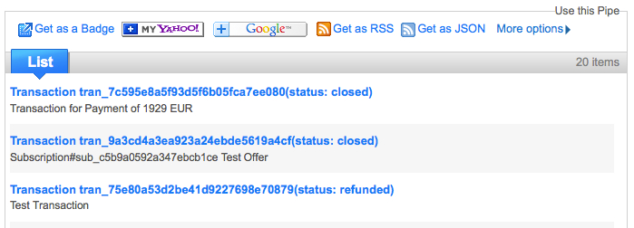

Hello all,
we at PAYMILL are always looking for new ways to add value to our service and recently we have been focusing efforts on increasing the usefulness of your REST API.
Yahoo Pipes has been around for a long time and is an amazing tool for mashing up data on the web and we have create two example Pipes for generating RSS feeds from your PAYMILL account, listing your latest transactions and offers

For using the pipes we developed, you need a Yahoo account for being able to clone them. For running the pipe, you need your account secret key and you can also set your timezone

After running the pip, you can copy the RSS URL and add it to your favorite RSS reader. The RSS feed details only simple data but the items themselves link to the specific item detail page on PAYMILL's website.

We hope you find it useful and we will keep working on improving our service.